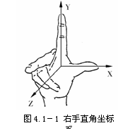
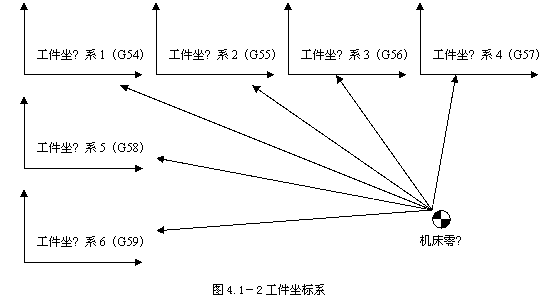

| 坐标系统 |
在数控机床上加工零件时，刀具与零件的相对运动，必须在确定的坐标系中才能按规定的程序进行加工。为了便于编程时描述机床的运动，简化程序的编制方法，保证记录数据的互换性，数控机床的坐标和运动方向均已标准化。机械工业部于1982年颁布了JB3051-82数字控制机床坐标和运动方向的命名标准，其命名原则和规定如下：

相对于静止的工件而运动的原则。
这一原则是为了使编程人员能够在不知道是刀具移动，还是工件移动的情况下，就能够依据零件图纸，确定机床的加工过程。
标准坐标系的规定
标准坐标系是一个右手直角坐标系。如图所示。
这个坐标系的各个坐标轴与机床主要导轨相平行。
机床上坐标轴正方向的规定
机床某一轴的正方向，是增大刀具和工件距离的方向。具体说明如下：
Z 轴
标准坐标系中，与机床平行的主轴的轴为Z轴。
铣床上，主轴为带动刀具旋转的轴。从工件到刀架的方向定为Z轴正向。
X轴
一般情况下，X轴定为水平方向。
刀具旋转的机床
Z轴为水平：朝Z轴负方向看时，X轴正向应指向右方。
Z轴为垂直，单立柱机床：从机床的前面向立柱看时，X轴正向应指向右方。
Z轴为垂直，龙门式机床：从主要主轴向左手立柱看时，X轴正向应指向右方。
Y轴
Y轴正向应由右手坐标系确定。
机床参考点
机床参考点也称机械零点，它是指X、Y、Z、A四个方向沿正向移动到接近极限位置，感应到该方向参考点开关时所决定的位置。一台机床是否有回参考点功能，取决于机床制造商是否安装了参考点开关（也称机械原点开关）。
工件坐标系
用于工件加工的坐标系叫做工件坐标系，工件坐标系由用户预先设定。加工程序选择在已设定的工件坐标系下进行加工。工件坐标系可以通过修改其坐标原点在机床坐标系中的坐标位置进行设定或修改。
310M/Mi系统支持用户创建6个工件坐标系（G54-G59）,工件坐标系在机床坐标系中的位置及关系如图4.1－2所示。
